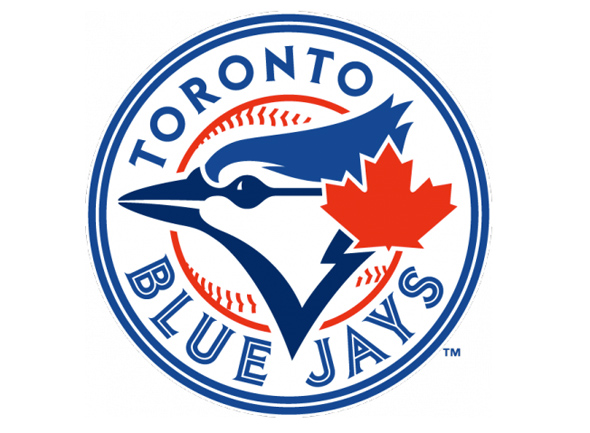

This is a website dedicated to finding Jose Bautista a new job.
Even millionaires need something to do during the day. At age 38, I don't think Joey Bats is fully ready to retire. However I don't think it will be easy to find him another $19,000,000 annual salary!
A well known Blue Jays hero, Jose will be most remembered for his "Bat Flip" Homerun in the final game of the ALDS.
He is second all time for Blue Jays in Home Runs, RBI's and Slugging Percentage